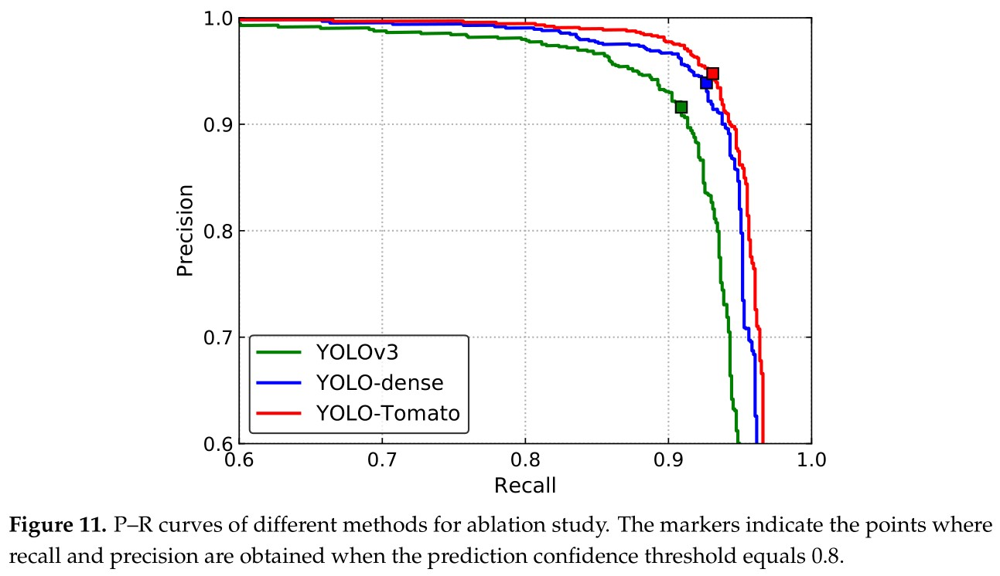
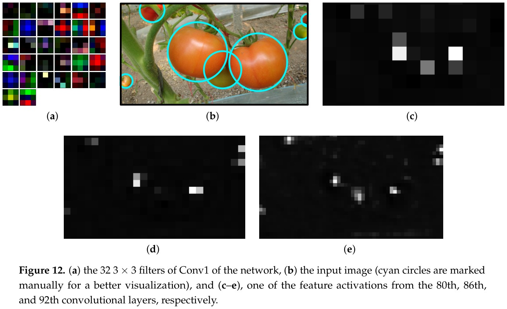

|  |
|  |
@article{liu2020yolo,
title = {YOLO-Tomato: A Robust Algorithm for Tomato Detection based on YOLOv3},
author = {Liu, Guoxu and Nouaze, Joseph Christian and Touko, Philippe Lyonel and Kim, Jae Ho},
journal = {Sensors},
volume = {20},
number = {7},
pages = {2145},
year = {2020},
doi = {10.3390/s20072145}
}
Comment: Detect tomatoes using a coarse-to-fine framework based on the combination of HOG, SVM, and a color analysis method.